Histórias e memórias da educação brasileira
Livro organizado por Solyane com a produção dos integrantes do grupo de pesquisa HIMEB e selecionado pela docente como representativo de sua trajetória na UFRB.
Memorial 20 anos · Perfil docente
História da Educação e Didática
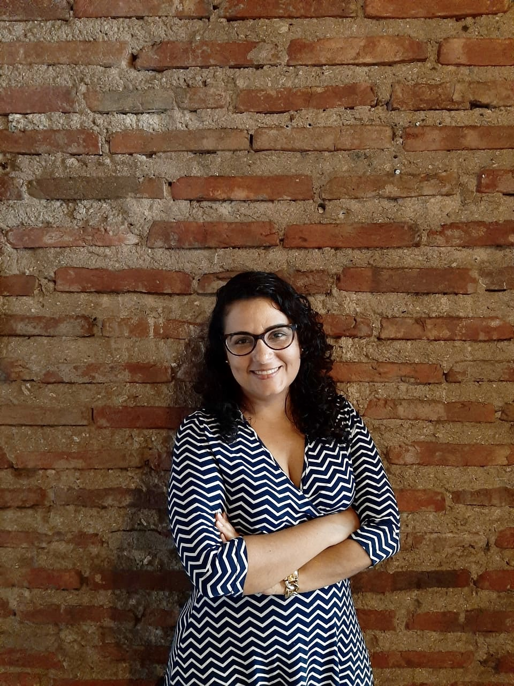
Trajetória no curso
Solyane Silveira Lima é docente efetiva do Curso de História da UFRB desde 2015, com atuação nas áreas de História da Educação e Didática. Em sua trajetória no curso, registra atividades como professora e pesquisadora e a atuação como coordenadora de área em 2019.
Produção intelectual
Livro organizado por Solyane com a produção dos integrantes do grupo de pesquisa HIMEB e selecionado pela docente como representativo de sua trajetória na UFRB.
Pesquisa e extensão
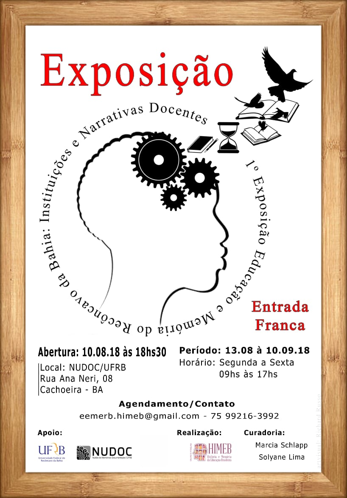
Projeto de pesquisa desenvolvido no Centro de Artes, Humanidades e Letras entre 2016 e 2020.
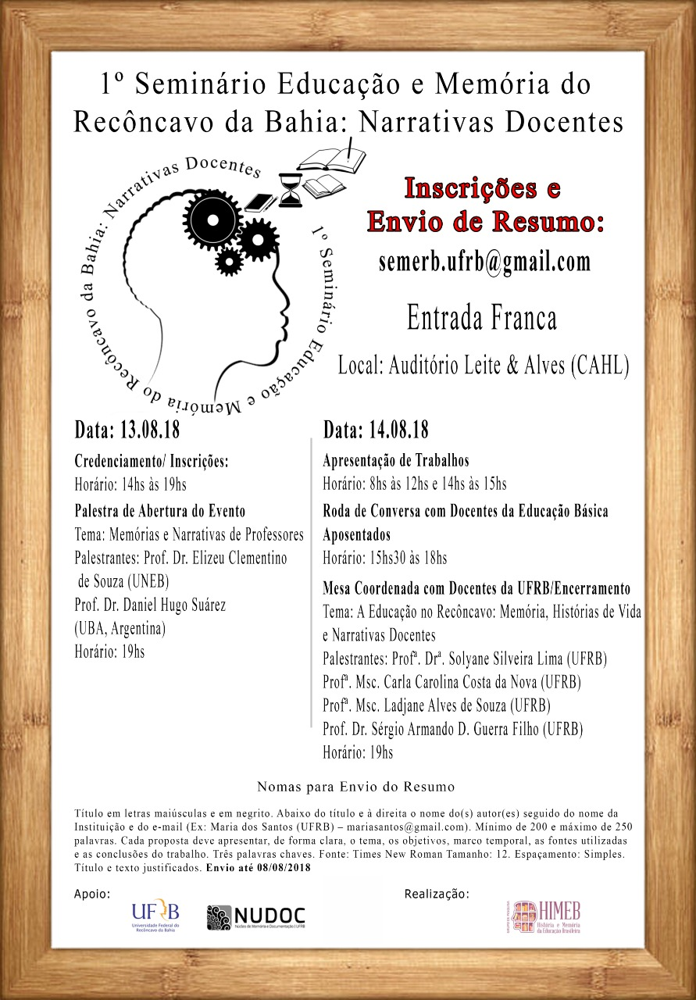
Atividade de extensão realizada no Centro de Artes, Humanidades e Letras em agosto de 2018.
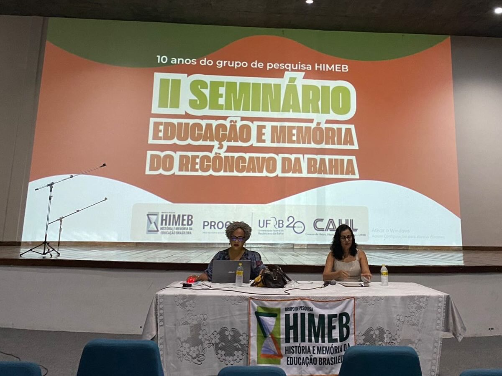
Segunda edição do seminário, realizada no Centro de Artes, Humanidades e Letras em 2025.
Vida docente
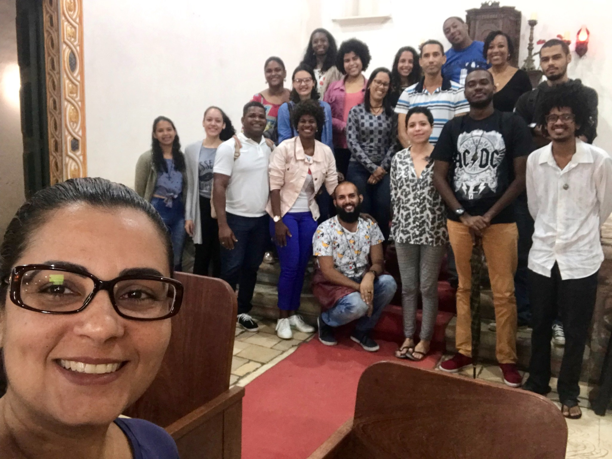
Registro de aula de campo realizada na Igreja de Belém da Cachoeira.
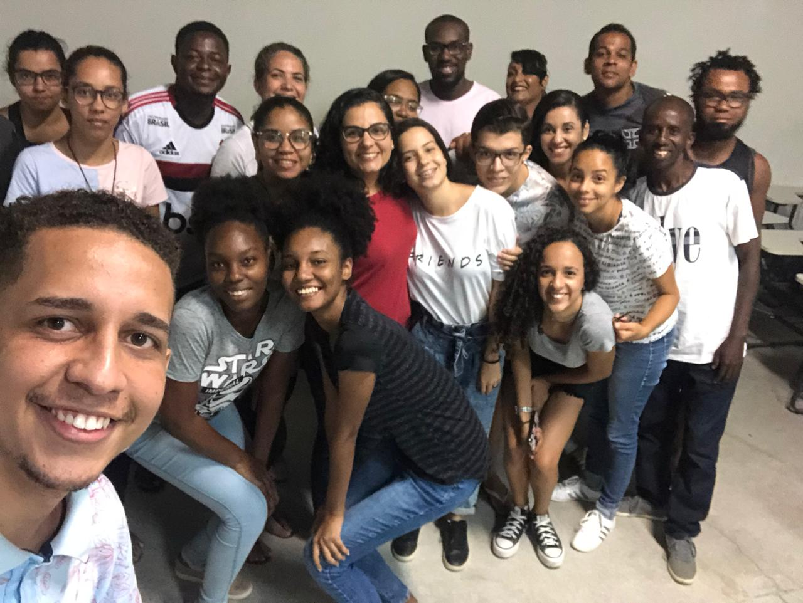
Encerramento das atividades do semestre com a turma de Estágio Supervisionado I.
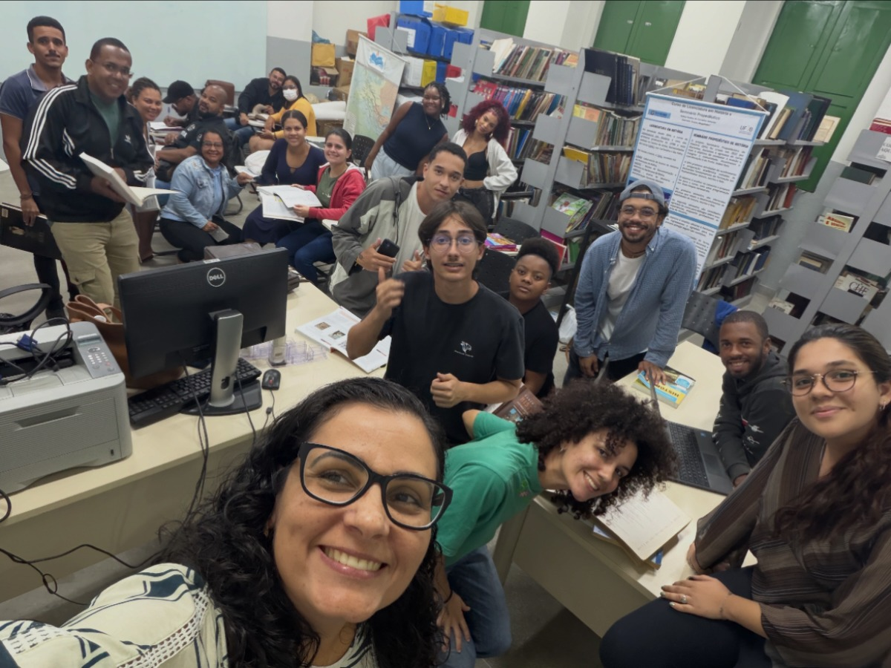
Aula prática de Didática realizada no LEHRB.
Ensino e pesquisa em outros momentos
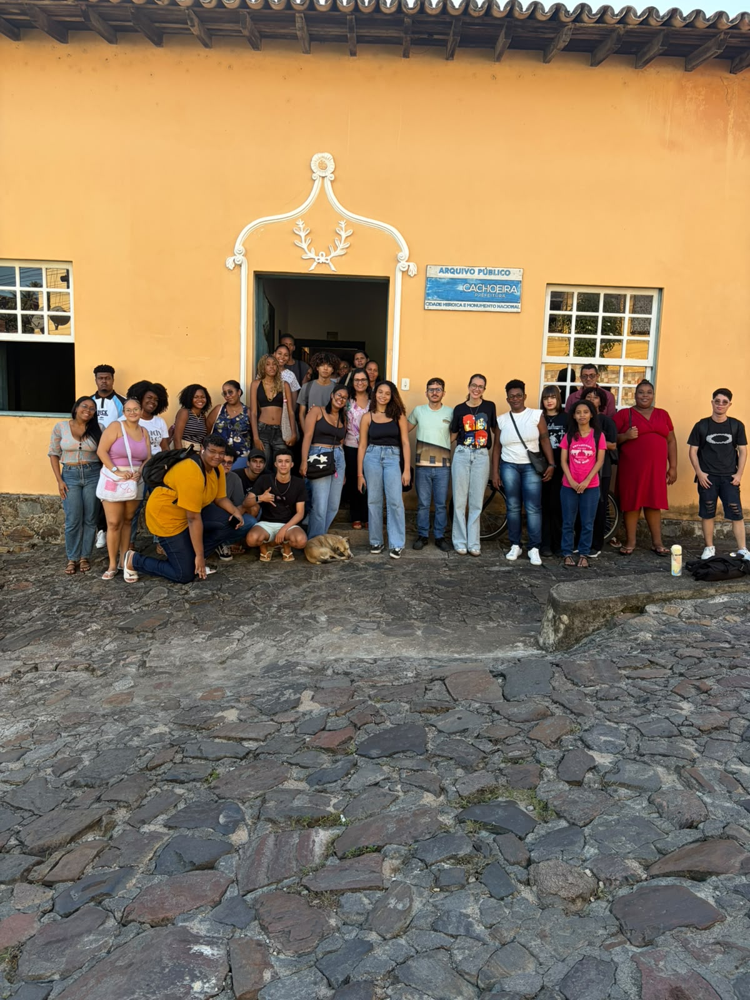
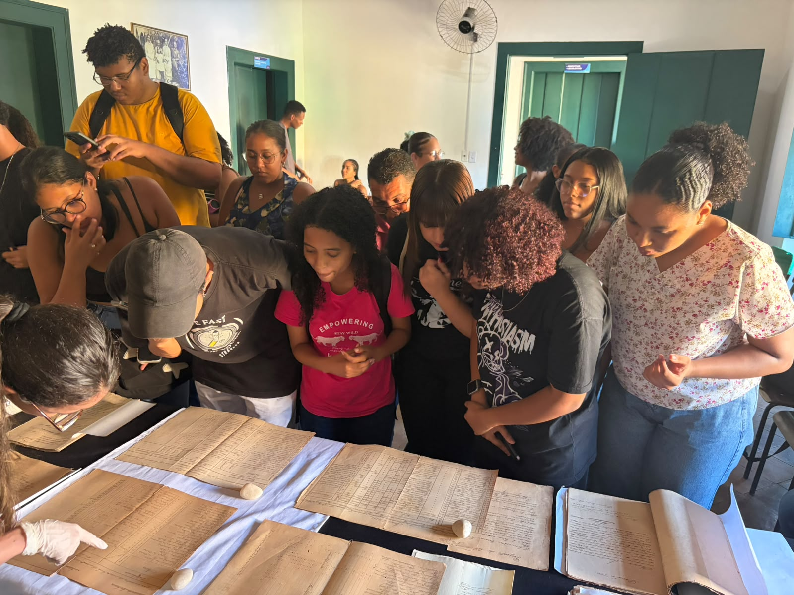
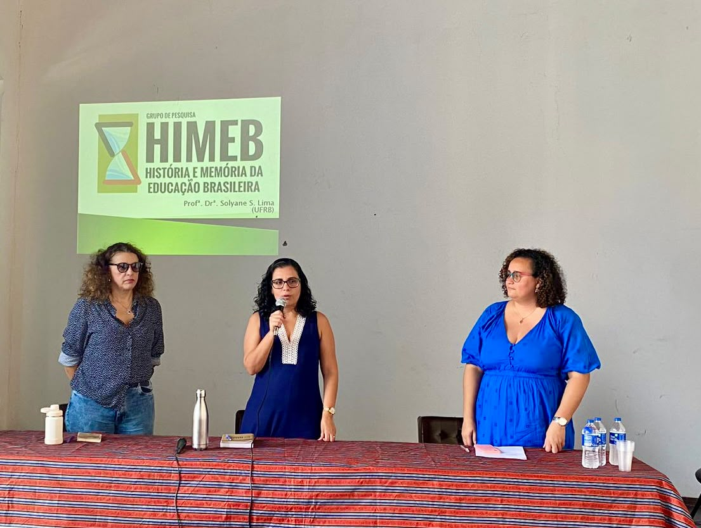
Pesquisa · 2025
Registro da apresentação do grupo de pesquisa História e Memória da Educação Brasileira (HIMEB) no Seminário de Pesquisa do Centro de Artes, Humanidades e Letras, em 2025.
Orientações e formação de estudantes
Registros de orientações e defesas de Trabalhos de Conclusão de Curso em diferentes momentos da trajetória docente de Solyane. Como esses registros não foram descritos individualmente no formulário, o Memorial os apresenta como um conjunto documental, sem atribuir nomes, datas ou bancas específicas às fotografias.
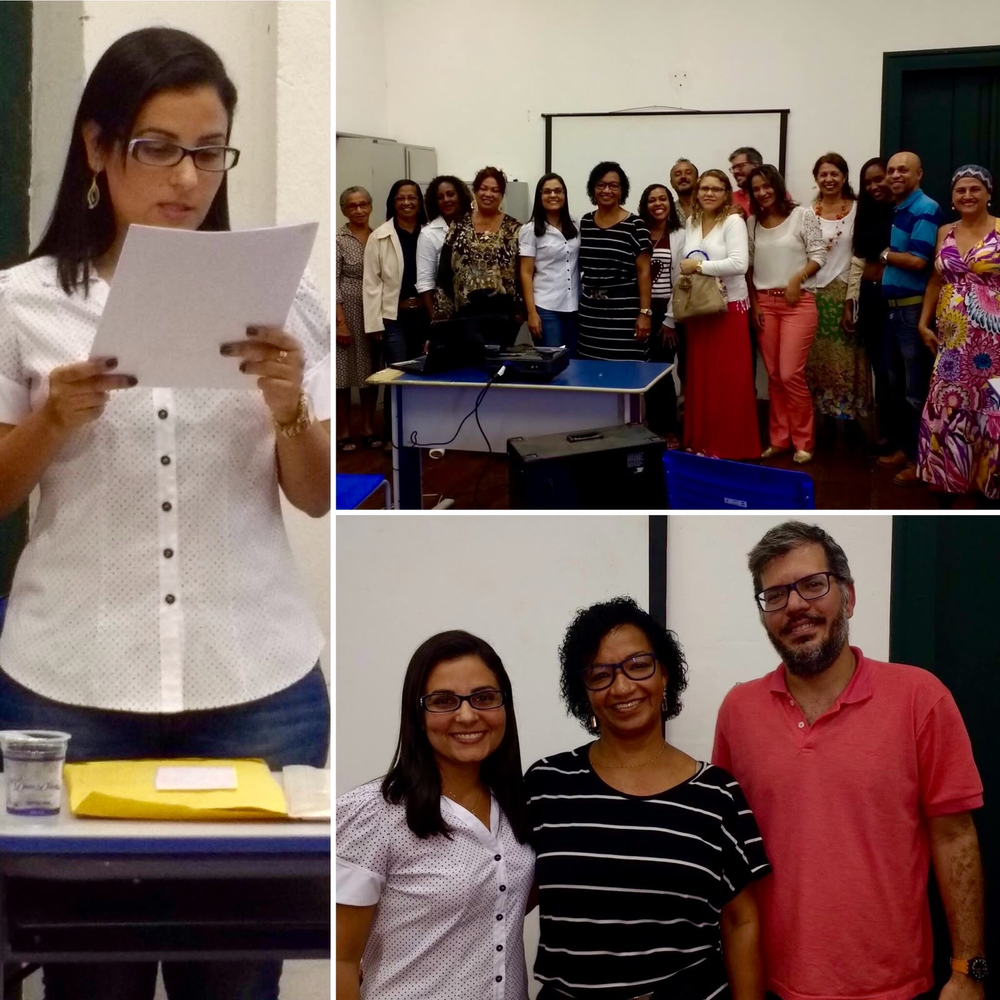
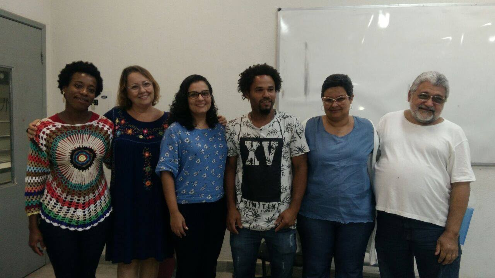
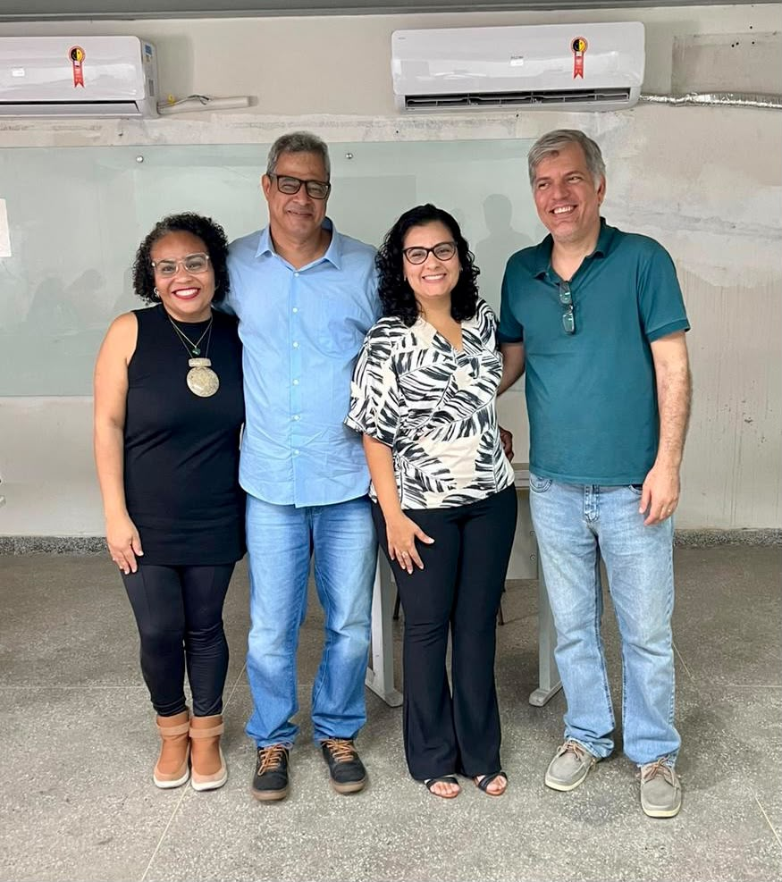